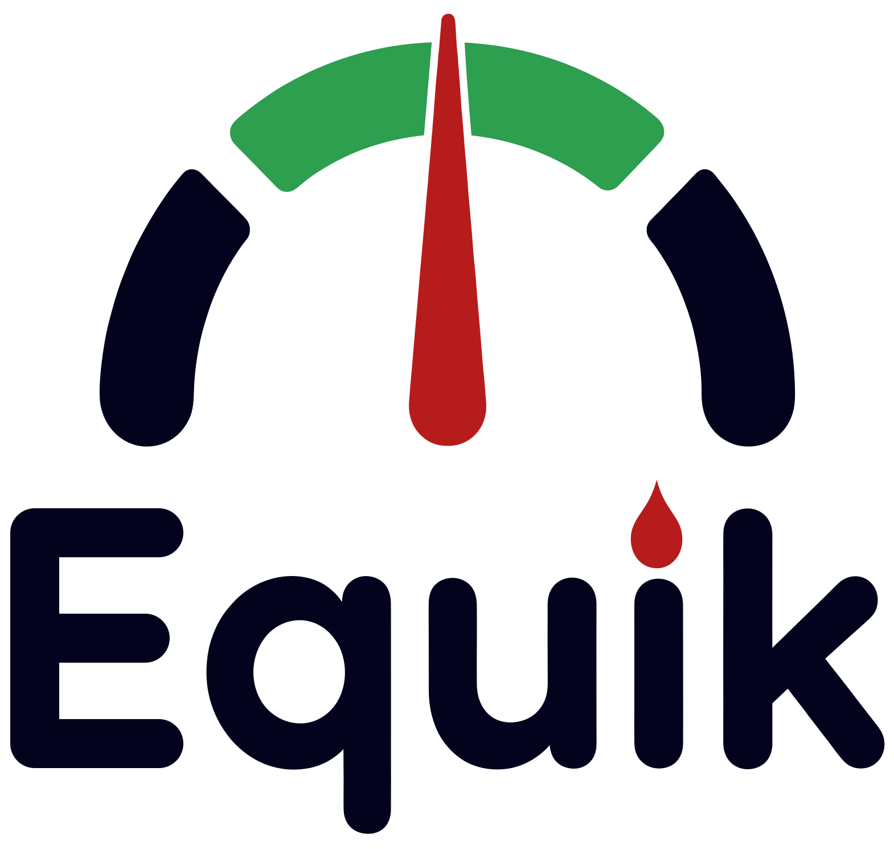

Responde dúvidas do consultório
Endereço, valores, convênios e como é a primeira consulta. O que não está no cadastro, ela não inventa.
Quanto custa a avaliação?
A avaliação custa R$ 250 e dura 50 minutos. Aceitamos Pix e cartão.
Ferramentas que unem inteligência artificial, algoritmos e evidências científicas ao dia a dia de quem cuida de pacientes. A Grace está disponível para demonstração, e o Equik está em desenvolvimento.

Secretária que atende os pacientes do consultório no WhatsApp e marca as consultas no Google Agenda.
Disponível para demonstração
Aplicativo para pacientes em uso de varfarina, com apoio de algoritmo e acompanhamento do médico responsável.
Em desenvolvimentoEla segue as informações e as regras que você cadastra no painel.
Endereço, valores, convênios e como é a primeira consulta. O que não está no cadastro, ela não inventa.
Só oferece horários livres de verdade e respeita horários fixos, dias fechados e feriados.
O lembrete sai pelo WhatsApp, e a Grace anota quando a pessoa confirma a presença.
A mãe que manda um áudio às 22h recebe resposta como se tivesse escrito. O áudio é transcrito no servidor do próprio consultório.
A Grace nunca dá orientação clínica. Numa possível emergência, a resposta começa pela orientação de ligar para o SAMU (192).
Você e a sua secretária acompanham tudo num só lugar, no computador ou no celular.
Leia o que a Grace respondeu e assuma qualquer conversa quando quiser.
A semana inteira, com cores para cada tipo de consulta, até um ano à frente.
A secretária marca quem chegou e quem pagou.
Quanto entrou no mês e o que falta receber. Só a dona do consultório vê.
A Grace avisa os pacientes do imprevisto e oferece novos horários.
Do primeiro contato até a Grace atender os seus pacientes, em cinco etapas que se sobrepõem.
Levantamos horários, valores, convênios e as regras da sua agenda.
WhatsApp oficial, inteligência artificial, Google Agenda e servidor, cada um pago direto ao fornecedor.
A Laplace Health cadastra as suas regras e liga a Grace à sua agenda.
Você conversa com a Grace e pede os ajustes antes de ela atender pacientes.
A Grace passa a atender, e a sua equipe aprende a usar o painel.
Os dados dos pacientes são do consultório. A Laplace Health trabalha neles só para fazer o serviço. Ler a política de privacidade
A Grace usa a plataforma oficial da Meta para empresas, sem aplicativos paralelos que arriscam o bloqueio do número.
As contas do WhatsApp, da inteligência artificial, do Google Agenda e do servidor ficam no nome do consultório.
Nenhuma configuração faz a Grace dar orientação clínica, inventar informação ou falar de um paciente com outra pessoa.
Hoje a Grace atende só em português e só pelo WhatsApp.